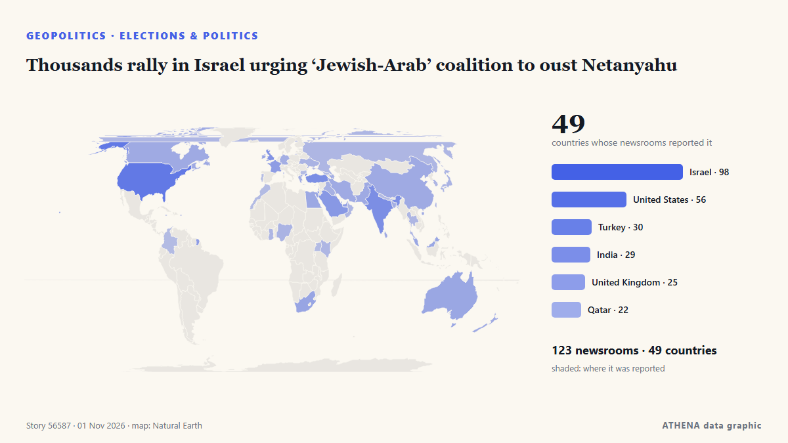

Géopolitique, politique et sécurité
Les titres sont affichés en anglais, tels que publiés.

Élections et politiqueThousands rally in Israel urging ‘Jewish-Arab’ coalition to oust Netanyahu
Former deputy governor tells Central Banking prime minister’s proposals are ‘stupid’ and ‘crazy’ de Central Banking
| 19 oct. | 191 |
|---|---|
| 20 oct. | 86 |
| 21 oct. | 165 |
| 22 oct. | 271 |
| 23 oct. | 251 |
| 24 oct. | 175 |
| 25 oct. | 179 |
| 26 oct. | 316 |
| 27 oct. | 273 |
| 28 oct. | 232 |
| 29 oct. | 241 |
| 30 oct. | 263 |
| 31 oct. | 115 |
| 1 nov. | 24 |
Brazil's Lula wins 4th term
Our experts unpack what Lula’s victory means for Brazil’s ties with Washington and how it could reshape a region trending right. de Atlantic Council
Rapper Nicki Minaj joins Trump onstage at Michigan rally
The Super Bass singer is the latest big name to campaign in Michigan, where a tight Senate race is playing out ahead of the 3 November midterms. de BBC News
Iran warns US, Israel against new attacks after Trump, Netanyahu threats
TEHERAN: Iran’s supreme leader warned the United States and Israel Saturday of fresh attacks following their threats to resume strikes after crucial elections, as fears increased over a return to… de New Straits Times
Turkic states target 2027 launch for joint satellite from Kazakhstan
Russia also intends to assist Tanzania in establishing a national space agency. de TASS (English)
Archbishop Elpidophoros Casts First Vote as American Citizen
Archbishop Elpidophoros voted for the first time as an American citizen and urged all Americans to vote in the 3 November midterms. de Greek City Times
Turkey nominates OSCE chief Sinirlioğlu for UN’s top job
Turkey has nominated Feridun Hadi Sinirlioğlu, head of the Organization for Security and Co-operation in Europe (OSCE), to be the next UN secretary-general, a diplomatic source confirmed on Saturday. de Turkish Minute
Erdogan, Zelensky talk Black Sea Grain Corridor
Turkish President Recep Tayyip Erdogan and Ukrainian President Volodymyr Zelensky agreed on Saturday to continue work on the Black Sea Grain Corridor, aimed at enabling grain shipments from Ukraine. de AzerNews
Rubio says US yet to decide on new Iran strikes
ATLANTA: US President Donald Trump has not made a decision about fresh strikes on Iran amid stalled peace talks, US Secretary of State Marco Rubio said Saturday. de Business Recorder
UK PM Burnham says he is ‘open’ to formal apology for slavery, but rules out reparations
At least 12.5 million Africans were abducted and sold into slavery. de Express Tribune
Russian foreign minister Lavrov arrives in US for G20 meeting
Russian Foreign Minister Sergey Lavrov has arrived in the US to attend a G20 meeting in Atlanta amid global tensions on various issues. de Arab News
US approves sale of 500 Patriot missiles to Ukraine
The American-made interceptors are the only effective weapon for downing Russia's ballistic missiles. de BBC News
Trump says conflict with Iran will 'end very soon'
President Trump expressed optimism that the conflict with Iran would end soon, though he didn’t provide specific details on how this would occur. de Arab News
US Embassy in Russia warns citizens in Moscow of potential 'mass casualty event' near museum
"The US Embassy in Moscow is aware of a credible threat of a mass casualty event TODAY, October 31, at the Tsaritsyno Museum Reserve in Moscow," the embassy wrote. de The Jerusalem Post
Flavio Bolsonaro Claims Political Persecution After Leaving Brazil
Bolsonaro disembarks plane after landing in Florida: AFP. de Gulf News
Aid operation and evacuations in Oleshky amid brief truce agreed to by Russia and Ukraine
A humanitarian mission entered the devastated city of Oleshky on Friday, officials said, as Russia and Ukraine observed the most significant truce of the 4½-year war that began with Moscow's… de PBS NewsHour World
Nations commit to get nature goals back on track
Nearly 200 nations struck hard-fought agreements Friday at a U.N. biodiversity summit, but the outcome was accompanied by disappointment over missed opportunities to address humanity's destructive… de Phys.org
Qatari Mediators Return to Tehran in Push for US-Iran Peace Deal
Qatari mediators returned to Tehran on Friday to advance efforts for a US-Iran agreement, but disagreements over nuclear negotiations, oil sanctions and a US port blockade continue to obstruct a… de Khaama Press
3 Killed as Ukraine Renews Drone Strikes Against Oil Refineries
Deputy Prime Minister Alexander Novak confirmed that Ukrainian drones targeted three oil refineries and one gas chemical complex overnight. de The Moscow Times
Starved residents of Russian-occupied Oleshky return to Ukraine during a rare local ceasefire
The six-day ceasefire was reached after mediation efforts by US first lady Melania Trump and with the pope’s help. de The Straits Times
US attacks 2 Iranian fishing boats off Masan, Qeshm Island
Iranian state broadcaster IRIB, citing a Hormozgan province official, said on Saturday that the US attacked two fishing boats near Qeshm Island, leaving two fishermen missing and one wounded. de Business Recorder
Oil jumps 2%, settles at 6-month highs on fears of escalation in Iran
Oil prices jumped more than 2 percent on Friday and settled at their highest levels since the end of April, as traders braced for a potential escalation in the Iran war after the U.S. midterm… de The Korea Times
Saudi-led coalition says it intercepted Houthi drone near Riyadh
Riyadh: Saudi forces on Tuesday intercepted a ballistic missile aimed at the kingdom's capital, said a spokesman for the Riyadh-led coalition backing Yemen's government, after auth... de Oman Observer
US Costs of Iran War Rise to Over $47 Billion, According to Pentagon Estimate
More than $6 billion would be needed to replace military equipment and 'platform losses' de Express Tribune
CONTSHIP JET Container Ship Sinks After Drone Attack in Black Sea
The CONTSHIP JET sank after being struck by three drones off Bulgaria; 18 crew rescued, and 20 containers fell into the sea. de SeaNews Türkiye
Pope Leo becomes first pontiff to cast ballot in US election
WASHINGTON, Oct 30 - Pope Leo XIV cast a ballot by mail in the US midterm elections, the Vatican press office said on Friday, a historic first for the American-born pontiff. de The Straits Times
Trump reverses decision to cancel Kansas and Iowa rallies before midterms
The president cancelled the events in favor of tele-rallies, as Republicans face a fight to retain control of Congress Donald Trump cancelled, and then promptly uncancelled, two in-person rallies in… de The Guardian
What Maria Corina Machado’s return to Venezuela means for its democratic transition
CARACAS, Oct 23 - The Venezuelan opposition movement headed by Nobel Peace Prize laureate Maria Corina Machado is preparing for eventual elections, including a new effort to boost voter registration… de The Straits Times
Pentagon tells Europeans to cool their rhetoric on Russia, sources say
US message reflect debate within NATO to publicly address threat of increasingly assertive Russia. de Express Tribune
Evacuations begin in Ukraine under localized ceasefire brokered by Melania Trump
Residents of the Russian-occupied Ukrainian town have reported a worsening food crisis since 2022. de Express Tribune
Greek PM calls Turkey-Libya maritime deal 'void;' calls for global truce after Black Sea attacks
UNITED NATIONS, Oct 29 - Greek Prime Minister Kyriakos Mitsotakis said on Thursday that the recently signed maritime deal between Libya's eastern parliament and Turkey was \"blatantly illegal, null… de The Straits Times
North Korea fires around 10 ballistic missiles toward sea off east coast, Seoul says
North Korea launched approximately 10 short-range ballistic missiles into the sea off its east coast. de Arab News
Over 600 drones targeted Moscow and surrounding area
Moscow Mayor Sergei Sobyanin claims that 613 drones flew towards Moscow Oblast overnight, while restrictions were imposed at three airports and flights were diverted. de Ukrainska Pravda (English)
‘Horrific’ Russian drone strike kills 14 at Ukraine train station
Another 14 people were wounded, including an 11-year-old boy and a man who had “both legs amputated”. de The Straits Times